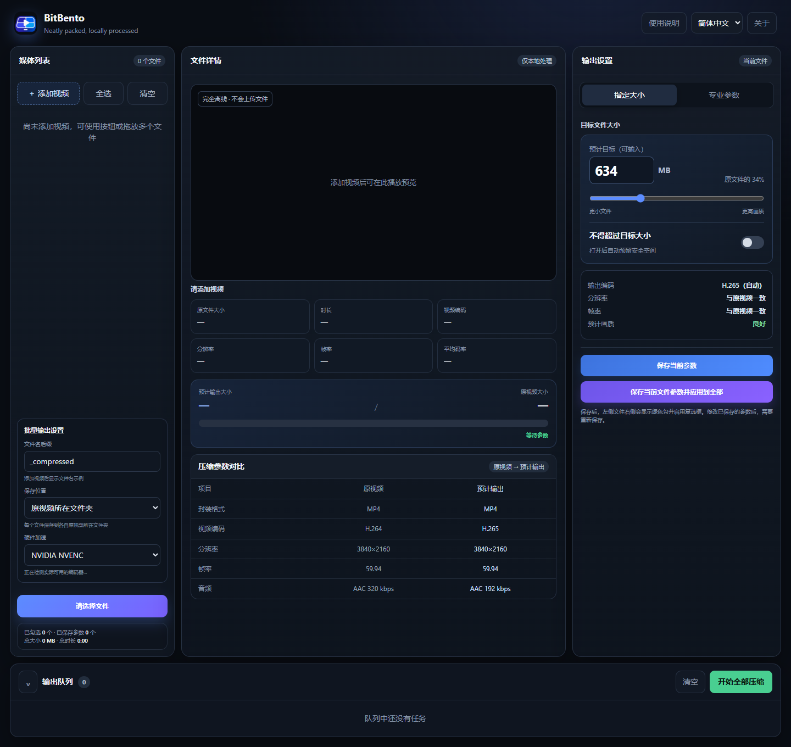

01 / PRIVACY
网络传输：0 KB
隐私留在本地
全程离线处理 无需上传视频 不经过云端
目标大小、专业参数、批量队列与硬件加速 所有处理都在你的电脑上完成

把复杂的编码逻辑收进一个清晰的工作台 你只需要决定想要的结果 剩下的交给 BitBento
全程离线处理 无需上传视频 不经过云端
指定目标文件大小 或精细控制编码参数
熟悉的操作流程 不一样的交付速度
支持 NVIDIA、Intel 与 AMD 等硬件加速
从媒体信息、画面预览和参数设置 到批量队列与实时进度 所有关键状态都在同一个界面中
从格式识别、复杂路径到中途取消 BitBento 为真实的视频文件与日常工作场景而设计
免费、开源、为 Windows 11 x64 打造
安装包支持简体中文与 English · 当前版本未签名，Windows 可能显示未知发布者提示